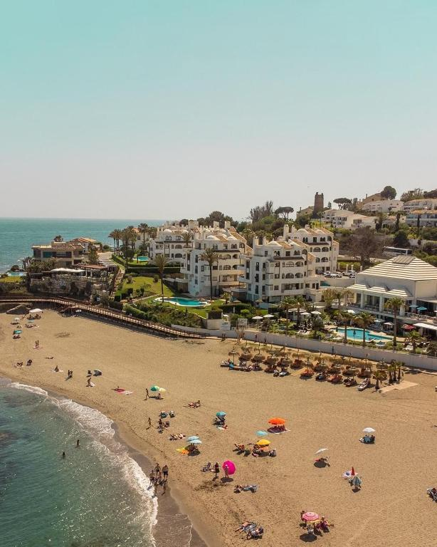
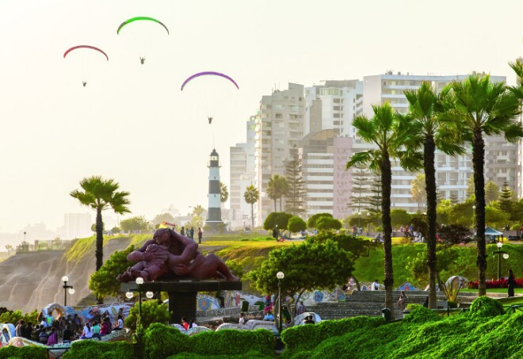

Beachtown Activities
Miraflores
While in Lima, visitors can head to Miraflores, a popular city next to the coast. It is one of Lima's most popular tourist destinations and is known for its breathtaking coast views, high-end shopping, and delicious foods. It is located on a clifftop, which allows visitors to see the beautiful Pacific Ocean. A great place to visit in Miraflores is its famous boardwalk, which stretches nearly 10 kilometers along the coast. The boardwalk is a nice escape from the bustling city and great for leisure.

Those who prefer something more exciting can participate in multiple fun activities on the beach, such as paragliding and surfing. Visitors can soar above the coastal cliffs for amazing views of Miraflores, and surfing enthusiasts can surf waves at Makaha and Waikiki Beach. Parque Kennedy is also a great place to visit while in Miraflores. It is a vibrant and lively urban park popular with tourists. There are various street performances to see and many stray cats to pet. There are also multiple food vendors selling snacks to indulge in.